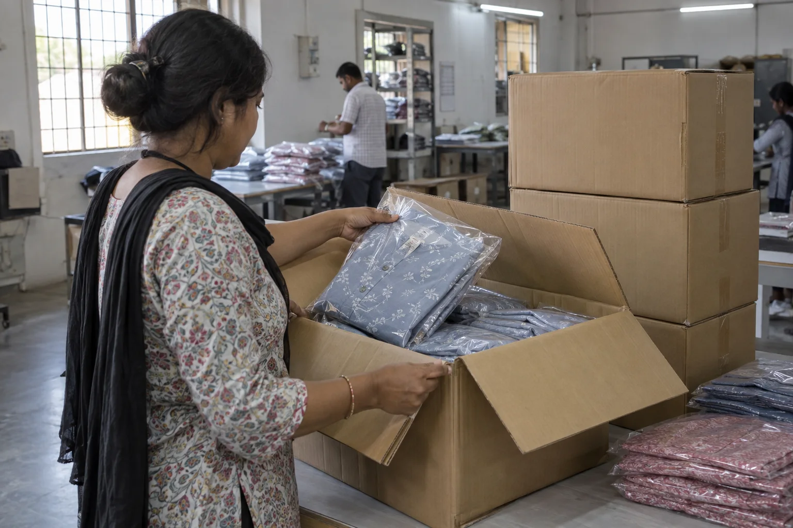
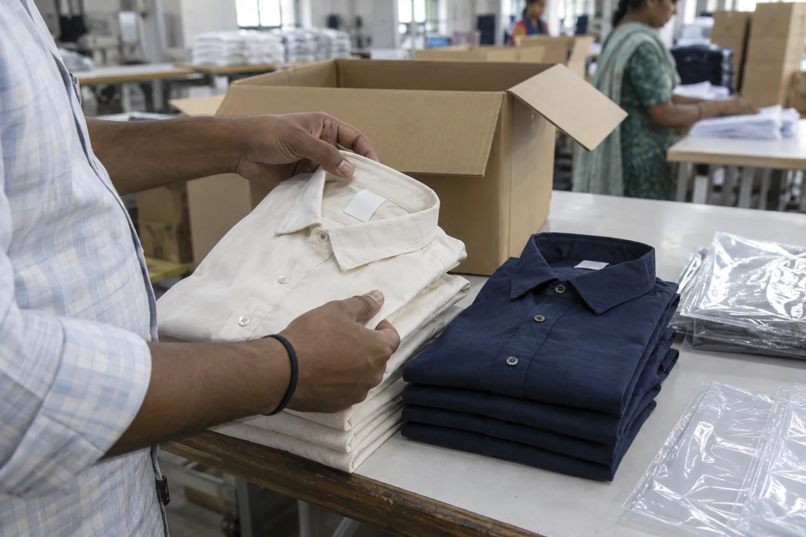
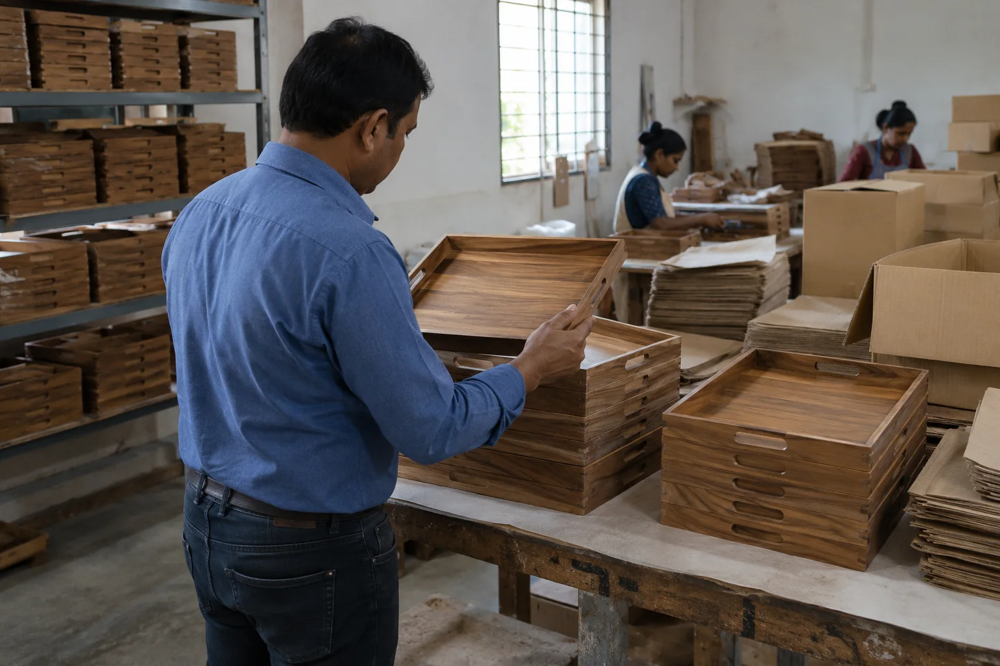

Supplier management support in India
The risk is rarely confined to one inspection day. Specifications evolve, samples are revised, production starts and shipping dates move. Defined checkpoints keep the order visible.
Send your brief by email or WhatsApp, choose what suits your team.

For buyers managing Indian suppliers: a practical way to keep agreed requirements, production progress and quality questions in view. A factory audit evaluates a supplier at a point in time; management support follows defined milestones as an order progresses.
Where attention helps
Build visibility across the supplier relationship
Supplier management is not one fixed package. We agree the milestones and responsibilities that match the order's complexity and your internal team.
Before production
Confirm approved samples, materials, specifications and the questions still open with the supplier.
During production
Follow agreed milestones and arrange targeted checks when an issue needs on-site evidence.
Before shipment
Bring final inspection and packing questions into the release decision.
Why it matters
Small ambiguities become expensive late
A changed fabric or lining, an unapproved metal component, a different wood finish or a misunderstood packing instruction can be easy to miss in email and costly to discover after shipping. A shared list of approved references and open issues gives the buyer and supplier a more reliable basis for decisions.
We can help identify where an AQL inspection, third-party visit or factory audit will add the most value.
A clear boundary
Your commercial relationship remains yours
The buyer sets the commercial terms and approves product changes. The supplier makes the goods. Our role is to provide agreed follow-up, observations and inspection support so decisions are based on current information.
We confirm the communication cadence, access and deliverables in the service scope rather than implying continuous surveillance.
How to begin
Define the points where you need confidence
Map the order
Share the product, supplier locations, key dates, approved references and known risk points.
Set checkpoints
Agree when updates, visits or inspections are needed and what each should answer.
Keep decisions explicit
Document findings and open issues so the buyer can approve, correct or escalate promptly.
Continuity on the ground
Keep the approved product visible as production moves
Supplier follow-up is most useful when it connects the latest buyer decision to a defined production milestone. The checkpoints for cotton garments or pet clothing will differ from those for leather goods, outdoor gear or assembled metal-and-wood products, but the discipline is the same: clarify what changed, what is ready and what still needs a decision.


A practical cadence
Escalate decisions, not every factory message
Milestones with a purpose
Each update or visit should answer a defined question: material approval, sample closure, production readiness, progress against a concern, corrective action or shipment release. This keeps the service proportionate to the order.
Clear ownership
Adamant can gather agreed observations and coordinate quality checkpoints, but the buyer remains responsible for commercial approvals and the supplier remains responsible for production. Urgent decisions and unresolved deviations stay visible to the buyer.

Build the cadence around decisions
Choose checkpoints before production becomes urgent
Supplier management is most effective when everyone knows which changes need buyer approval and when evidence is required. The programme can be as focused as three checkpoints or cover several factories, but it should never imply that every message or production step is being continuously monitored.
Typical checkpoints include:
- material, component or packaging approval;
- pre-production sample closure and open comments;
- production start or progress against a known risk;
- corrective action after an inspection finding; and
- final inspection readiness before shipment release.
Send the current order calendar, supplier locations, approved references and the decisions your team struggles to see from overseas. We can propose a proportionate cadence and identify where a physical visit adds value.
Managing an active order from overseas?
Email or WhatsApp the product, supplier city, next milestone and the issue that currently lacks visibility.
More product-specific examples
Keep assortment and packing readiness visible
A production checkpoint should answer a specific buyer question: which variants are ready, what remains open and whether the next inspection or packing step can proceed. Agree the evidence needed at each milestone before the order becomes urgent.


Common questions
What this service is, and is not
Is this only for large programmes?
No. A single high-value or time-sensitive order may benefit from a few defined checkpoints. The scope should match the risk and budget.
Does this replace my supplier relationship?
No. We support the buyer with local observations and coordination around agreed quality milestones; purchasing and commercial approvals remain with you.
Can this cover several factories?
Potentially. Share their locations, order stages and expected cadence so we can propose a realistic scope.
Related services
Give the next order a clearer line of sight
Tell us which supplier, product and milestone worries you most.
Email is useful for specifications and attachments; WhatsApp is convenient for quick questions and photos. If you do not receive an email reply, please follow up by WhatsApp or phone.